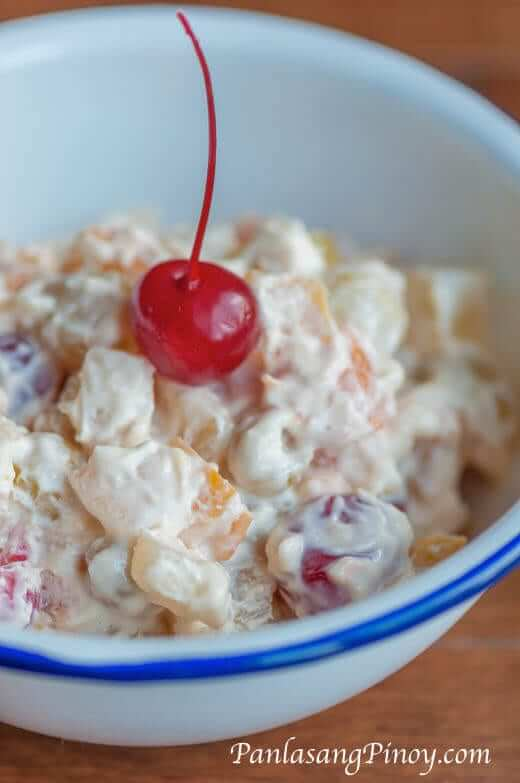

Pinoy Fruit Salad Recipe

INGREDIENTS
- 2 cans 30 oz. fruit cocktail
- 1 can 7.6 oz. table cream
- 7 oz. 1/2 can condensed milk
- 12 pieces maraschino cherries
COOKING INSTRUCTIONS
Step 1 Open the fruit cocktail and drain the syrup by pouring it on a
colander. Let the liquid drain totally (around 30 minutes).
Step 2 Arrange the drained fruit cocktail in a mixing bowl. Add the table
cream, condensed milk, and maraschino cherries.
Step 3 Gently fold the mixture until all the ingredients are well
distributed. Cover the mixing bowl with sling wrap then refrigerate
overnight.
Step 4 Remove from the fridge and transfer to a serving bowl.
Step 5 Serve. Share and enjoy!